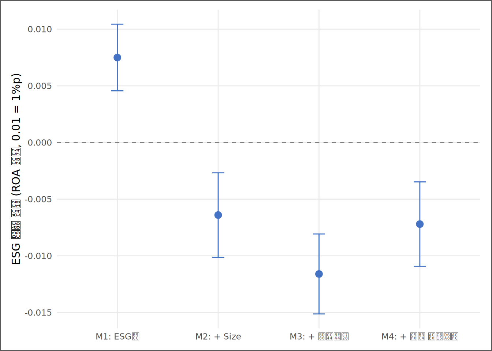
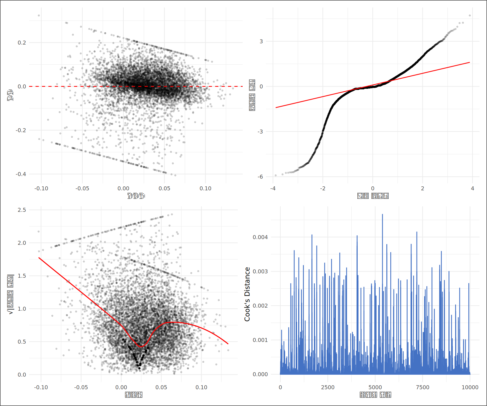

| 표 10.1 이 장의 핵심 키워드 | ||
|---|---|---|
| # | 키워드 | 한 줄 핵심 |
| 1 | 통제된 비교 (Ceteris Paribus) | 회귀의 본질 — 다른 조건을 고정하고 한 변수의 조건부 차이만 분리한다 |
| 2 | 단순회귀 vs 다중회귀 | 통제변수가 없는 회귀는 비교가 아니라 단순한 평균 차이다 |
| 3 | 누락변수편의 (OVB) | Y에 영향을 주면서 X와 상관된 변수를 빠뜨리면 계수가 체계적으로 왜곡된다 |
| 4 | 보조회귀 (Auxiliary Regression) | 누락변수와 X의 관계를 측정해 편의의 방향과 크기를 가늠하는 도구 |
| 5 | 다중공선성과 VIF | 통제변수끼리 정보가 겹치면 계수는 불안정해진다 — VIF로 진단한다 |
| 6 | 잔차 진단 (Residual Diagnostics) | 모형이 설명하지 못한 잔차에 가정 위반의 흔적이 남는다 |
| 7 | 강건·클러스터 표준오차 | 이분산과 기업 내 반복 관측을 반영해 불확실성을 현실적으로 다시 계산한다 |
직선을 믿기 전에 — 회귀분석, 누락변수, 그리고 진단
“모든 모형은 틀렸다. 그러나 어떤 모형은 유용하다.” — George E. P. Box
사례로 시작하기
한 외부 리서치 기관이 보고서를 발표한다. 제목은 선명하다. “ESG 평가를 받은 기업의 수익성이 더 높다.” 근거는 회귀분석 한 줄이다 — ESG 평가 대상 기업의 ROA가 미평가 기업보다 높다는 것. 보고서는 결론으로 직행한다. “따라서 ESG 펀드 비중을 확대해야 한다.”
KG Asset의 운용회의에서 이 보고서가 화면에 띄워졌을 때, 팀장은 신입 분석가 김자산에게 짧게 물었다. “이 회귀, 믿어도 되나?”
자산은 머뭇거렸다. 계수는 양수였고, 표본도 수만 건이었다. 무엇을 더 따져야 하는가? 그날 자산이 배운 것은 질문을 바꾸는 법이었다. “ESG 평가를 받았기 때문에 수익성이 높은가, 아니면 애초에 크고 안정적인 기업이 평가 대상으로 선택되었기 때문에 그렇게 보이는가?” 평가기관은 자료가 풍부한 대형 상장사부터 평가한다. 대기업은 평균적으로 사업 포트폴리오가 넓고 자금조달 여력이 커, 평가를 받지 않아도 수익성이 안정적으로 보일 가능성이 있다. 그렇다면 보고서가 발견한 것은 ESG 평가대상 여부와 ROA의 진짜 조건부 차이인가, 아니면 대기업 효과가 ESG 평가 더미에 붙어 나온 착시인가?
이 장의 목적은 ESG의 선악을 판정하는 것이 아니다. 목적은 더 근본적이다. 비교 가능한 기업끼리 비교하지 않으면, 회귀계수는 그럴듯한 숫자의 탈을 쓴 착시가 된다. 이 장은 ESG 성과 분석이 아니라 선택편의와 통제된 비교의 훈련이다.
이 장은 말하자면 한 편의 재판이다. 외부 보고서의 주장이 피고석에 앉아 있고, 회귀분석이 증인으로 출석한다. 그러나 증인의 말을 그대로 믿는 법정은 없다. 반대신문으로 증언의 빈틈을 찌르고(누락변수편의), 증인들끼리 입을 맞췄는지 확인하고(다중공선성·VIF), 증거물을 감식반에 넘겨 위조 여부를 검사한다(잔차 진단·강건 표준오차). 전 장(9장)에서 상관계수가 “관계의 존재”까지만 증언할 수 있다는 것을 보았다면, 이 장의 재판은 그 관계가 다른 변수를 고정한 뒤에도 살아남는가를 묻는다. 판결까지의 절차가 곧 이 장의 목차다.
핵심 키워드
학습 목표
이 장을 마치면 다음 여섯 가지를 할 수 있다.
- 단순회귀와 다중회귀의 차이를 “통제된 비교”의 관점에서 설명할 수 있다.
- 통제변수를 단계적으로 추가하며 핵심 계수의 이동을 추적하고, 그 이동을 누락변수편의로 해석할 수 있다.
- 보조회귀로 편의의 방향을 가늠하되, 그것이 최종 추정이 아님을 설명할 수 있다.
- 좋은 통제와 나쁜 통제를 구분하고, VIF의 다중공선성 진단과 누락변수편의를 혼동하지 않는다.
- 잔차 그림으로 이분산·영향점·관측치 의존성의 가능성을 점검할 수 있다.
- HC1·기업 클러스터 표준오차를 비교하고, 분석 결과를 1쪽 검증 메모로 번역할 수 있다.
D→I→K→W 4단계 파이프라인
| 단계 | 이 장에서의 모습 |
|---|---|
| 데이터 (D) | 기업-연도 패널 — ROA, ESG 평가 여부, 기업 규모, 부채비율 |
| 정보 (I) | 집단 간 평균 차이와 상관 — “ESG 평가 기업의 ROA가 더 높다” |
| 지식 (K) | 통제된 비교 — “규모와 레버리지를 고정해도 그 차이가 남는가?” |
| 지혜 (W) | 투자 판단 — “이 관계를 근거로 자금을 움직여도 되는가, 더 따져야 하는가?” |
데이터 출처와 수집
| 표 10.2 이 장의 데이터 출처 | |||
|---|---|---|---|
| 데이터 | 출처 | 핵심 변수 | 이 장의 역할 |
| 재무제표 패널 | DataGuide 5.0 (KOSPI·KOSDAQ 상장기업) | 자산총계, 부채총계, 당기순이익 | 종속변수 ROA의 원천 |
| ESG 등급 | KCGS 등급 (DataGuide 제공) | ESG등급, is_esg_rated(평가 여부 더미) | 핵심 설명변수 |
| 파생 변수 | 3~5장에서 구축한 SSOT 파이프라인 | ROA, Size(log 자산), 부채비율_Win | 통제변수와 정제된 분석 표본 |
분석 표본은 3장에서 구축하고 4~5장에서 정제한 SSOT 데이터셋이다. 전 장들과 같은 데이터를 쓰는 이유는 단순하다 — 분석 단계마다 데이터가 바뀌면, 결과 차이가 방법의 차이인지 데이터의 차이인지 구분할 수 없기 때문이다.
회귀의 본질 — 통제된 비교
평균 비교는 질문이 하나다. “두 집단이 다른가?” 회귀분석은 질문이 다르다. “다른 조건이 같다면, 이 변수가 달라질 때 결과가 얼마나 달라지는가?”
이 차이를 처음으로 체계화한 사람이 19세기의 Francis Galton이다. 그는 아버지 키와 아들 키의 관계를 직선으로 요약하면서, 극단적으로 큰 아버지의 아들은 평균 쪽으로 “되돌아온다(regress)”는 사실을 발견했다. 회귀(regression)라는 이름은 여기서 왔다. 직선 하나로 관계를 요약한다는 발상은 그대로지만, 현대 재무분석에서 회귀의 진짜 쓸모는 직선 자체가 아니라 조건부 비교에 있다.
통제변수를 넣는다는 것은 비교 대상을 같은 체급으로 맞추는 일이다. 권투에서 헤비급과 플라이급을 한 링에 올려놓고 “누가 더 강한가”를 묻지 않는 것과 같은 이치다. 그런데 한 단계 더 깊이 들어가면, 회귀가 하려는 일은 체급 분류보다 훨씬 야심차다. 평균 비교는 눈에 보이는 현실을 비교하지만, 회귀분석은 눈에 보이지 않는 평행우주를 근사하려는 시도다. 우리가 진짜 묻고 싶은 것은 “평가받은 대기업 A와 평가받지 않은 중소기업 B 중 누가 수익성이 높은가”가 아니다. “규모와 재무구조는 그대로 둔 채 ESG 평가 하나만 받지 않은 평행우주의 A기업이 있다면, 그 우주의 ROA는 얼마나 다를 것인가”다. 현실에 평행우주는 없다. 그래서 통제변수를 방정식에 밀어 넣는다 — 데이터 공간 안에서 A와 체급이 똑같은 기업들을 수학적으로 빚어내 가상의 링에 세우는 작업이다. 통제를 잊은 분석가는 체급이 다른 허수아비와 싸우고, 통제를 마친 분석가만이 비로소 자신이 묻고 싶었던 질문과 대면한다.
수식으로 쓰면 다중회귀모형은 다음과 같다.
ROA_i = β0 + β1·ESGRated_i + β2·Size_i + β3·Leverage_i + ε_i여기서 β1의 의미는 “ESG 평가 여부만 다른 두 기업을 비교하되, 규모(Size)와 레버리지(Leverage)가 같은 기업끼리 비교했을 때의 ROA 차이”다. 회귀의 핵심은 직선이 아니라 비교대상의 설계다.
그렇다면 통제변수를 빼면 어떻게 되는가? 그것이 이 장의 첫 번째 실험이다.
보고서의 회귀를 재현하다 — 단순회귀
먼저 데이터를 불러와 분석 표본을 만든다. 4장에서 배운 Winsorize를 ROA에 그대로 적용한다 — 극단 기업 몇 곳이 회귀선을 끌고 가는 것을 막기 위해서다.
# ① SSOT 데이터 적재 (경로는 setup에서 ssot_path로 확정)
ssot_raw <- read_book_csv(ssot_path)
# ② 4장의 Winsorize 함수 — 1%·99% 분위수로 극단값을 눌러준다
winsorize <- function(x, probs = c(0.01, 0.99)) {
lo <- stats::quantile(x, probs[1], na.rm = TRUE)
hi <- stats::quantile(x, probs[2], na.rm = TRUE)
pmin(pmax(x, lo), hi)
}
# ③ 분석 표본: 필요한 변수만 고르고, 결측을 제거한다
reg_df <- ssot_raw |>
dplyr::transmute(
코드, 코드명, 회계연도,
ESG평가 = is_esg_rated,
ROA, Size,
부채비율 = 부채비율_Win
) |>
tidyr::drop_na(ROA, Size, 부채비율, ESG평가) |>
dplyr::mutate(ROA_w = winsorize(ROA))코드 읽기. R이 처음이라면 이 블록을 세 덩어리로 읽으면 된다. ①에서 read_book_csv()가 CSV 파일을 읽어 표 형태의 데이터(데이터프레임)로 만들고, 화살표 <-가 그 결과에 ssot_raw라는 이름을 붙인다 — <-는 “오른쪽 결과를 왼쪽 이름에 저장하라”는 R의 할당 연산자다. ②는 함수를 직접 만드는 장면이다. function(x, ...)로 “x를 받아 이렇게 처리하라”는 절차를 정의했고, 내용은 4장에서 배운 그대로 — 하위 1%보다 작은 값은 1% 지점으로, 상위 99%보다 큰 값은 99% 지점으로 눌러준다. ③의 |>는 파이프 연산자로, 왼쪽의 결과를 오른쪽 함수에 재료로 넘긴다. 따라서 ③은 왼쪽에서 오른쪽으로 문장처럼 읽힌다 — “ssot_raw를 받아서, 필요한 변수만 고르고(transmute), 분석 변수에 결측이 있는 행을 버리고(drop_na), Winsorize된 ROA를 새 변수로 추가한다(mutate).” 그리고 이 블록의 의미를 한 층 위에서 보자 — 이것은 단순한 전처리가 아니라 분석가가 통제할 세계(reg_df)의 경계를 긋는 선언이다. 극단값이 회귀선을 끌고 가지 못하게 방어벽을 치고, 표본을 하나로 고정해 모든 모형(M1~M4)이 같은 기업들 위에서 겨루게 만든다. 분석 단계마다 표본이 바뀌면, 결론의 차이가 모형 때문인지 데이터 때문인지 영원히 알 수 없게 된다.
분석 표본은 2010년부터 2024년까지, 기업 667개사의 기업-연도 관측치 10,000건이다. 이 가운데 ESG 평가를 받은 관측치의 비중은 40.47%다. 변수의 분포부터 확인한다.
변수 | 평균 | 표준편차 | 최소 | 중앙값 | 최대 |
|---|---|---|---|---|---|
ROA_w | 0.027 | 0.074 | -0.343 | 0.022 | 0.221 |
Size | 20.152 | 1.671 | 14.230 | 19.404 | 26.967 |
부채비율 | 0.437 | 0.170 | 0.081 | 0.395 | 0.906 |
ESG평가 | 0.405 | 0.491 | 0.000 | 0.000 | 1.000 |
재판의 첫 순서는 제출된 증거의 재현이다. 외부 보고서의 회귀를 그대로 다시 돌린다 — 통제변수 없이, ROA를 ESG 평가 여부에만 회귀시킨다.
m1 <- lm(ROA_w ~ ESG평가, data = reg_df) # ① 단순회귀: ROA_w를 ESG평가로 설명
m1_tidy <- broom::tidy(m1) # ② 결과를 깔끔한 표로 정리코드 읽기. ①의 lm()이 회귀분석을 수행하는 함수다(linear model의 약자). 물결표 ~가 들어간 ROA_w ~ ESG평가는 “ROA_w를 ESG평가로 설명하라”는 모형 공식이고, data = reg_df는 그 변수들을 어느 데이터에서 찾을지 알려준다. ②의 broom::tidy()는 회귀 결과를 계수·표준오차·t값·p값이 정돈된 작은 표로 바꿔준다 — 패키지명::함수명 표기는 “broom이라는 도구상자에서 tidy라는 도구를 꺼내 쓴다”는 뜻이다.
항 | 계수 | 표준오차 | t값 | p값 |
|---|---|---|---|---|
(Intercept) | 0.0242 | 0.0010 | 25.32 | 0 |
ESG평가 | 0.0075 | 0.0015 | 4.97 | 0 |
결과는 보고서와 같은 그림이다. ESG 평가 더미의 계수는 0.0075 — ESG 평가 기업의 ROA가 미평가 기업보다 평균 +0.75%p 높다는 뜻이고, 통계적으로도 보고서의 손을 들어주는 듯 보인다. 여기서 멈추면 보고서의 결론에 도장을 찍게 된다.
그런데 p값에 대해 본질을 하나 짚고 가자. p값은 단 하나의 질문에 답한다 — “차이가 없다는 가정이 맞다면, 지금처럼 크거나 더 극단적인 차이가 관측될 가능성이 얼마나 되는가.” p값은 누락변수가 있는지, 비교대상이 맞는지, 인과관계가 있는지를 말해주지 않는다. 모형 밖에서 덩치 큰 기업들이 ROA를 끌어올리고 있는 구조에 대해 p값은 완벽하게 눈을 감는다. 통제되지 않은 회귀에서의 유의성은 아직 찾지 못한 누락변수들이 무대 뒤에 서 있다는 경고음에 가깝다 — 0.05냐 0.10이냐의 선 긋기보다 이 사실이 백 배 중요하다.
그러나 자산은 팀장의 질문을 기억한다. “이 회귀, 믿어도 되나?” 단순회귀의 계수는 사실 두 집단의 평균 차이와 같다. 즉 M1은 회귀의 옷을 입은 평균 비교일 뿐이고, 8장에서 배운 t검정과 본질적으로 같은 정보를 준다. “통제된 비교”는 아직 시작도 하지 않았다.
누락변수편의 — 반대신문이 시작된다
직관 — 누가 ESG 평가를 받는가
누락변수편의(Omitted Variable Bias, OVB)는 어떤 변수 Z가 모형에서 빠져 있다는 전제 위에서, 두 조건이 동시에 성립할 때 생긴다. 첫째, Z가 종속변수 Y와 관련되어 있어야 한다. 둘째, Z가 핵심 설명변수 X와도 관련되어 있어야 한다. 이때 X의 계수는 Z의 몫까지 떠안는다.
덧붙여, 평가 여부 0/1 더미 자체의 한계도 알고 시작하자 — 이 더미는 형식적으로만 ESG를 내세우는 기업과 실질이 우수한 기업을 모두 ’1’이라는 같은 바구니에 담는다. 그래서 계수에는 잡음이 섞이며, 등급 수준을 쓰는 후속 분석(이 장 끝 메모의 권고 ②)이 필요해진다.
ESG 사례에서 가장 의심스러운 Z는 기업 규모다. ESG 평가 기관은 평가 수요와 자료 접근성 때문에 대형 상장사부터 평가한다(X와 상관). 그리고 대형사는 평균적으로 사업 포트폴리오가 넓고 수익성이 안정적으로 나타나는 경향이 있다(Y와 관련). 그렇다면 M1의 계수는 ESG 평가대상 여부와 ROA의 조건부 차이가 아니라, 기업 규모에서 온 차이가 함께 섞인 숫자일 수 있다.
수식으로 정리하면, 참 모형이 ROA_i = β0 + β1·ESGRated_i + β2·Size_i + ε_i 인데 Size를 빠뜨리고 추정하면, 단순회귀 계수의 기댓값은 다음과 같이 왜곡된다.
E[β̂1(단순회귀)] = β1 + β2 × δ
δ : 보조회귀 Size_i = α + δ·ESGRated_i + u_i 의 기울기
(ESG 평가 기업이 미평가 기업보다 평균적으로 얼마나 큰가)단순회귀가 보여주는 계수는 진실이 아니라 진짜 차이(β1)와 거품(β2×δ)의 합이다. 곱셈의 두 인수를 뜯어보자. β2는 무대 뒤에 있는 변수(기업 규모)와 ROA가 함께 움직이는 단순 기울기이고, δ는 겉으로 드러난 주인공(ESG 평가 더미)이 그 변수와 얼마나 강하게 묶여 있는가다. Size와 ROA의 관계가 강할수록, 그리고 Size와 ESG 평가 여부가 강하게 묶여 있을수록, 단순회귀의 ESG 계수에는 규모의 그림자가 더 많이 섞인다. 분석가의 임무는 보조회귀로 그 묶임(δ)을 측정해 거품의 방향을 가늠하는 일이다.
실험 — 보조회귀로 편의의 방향을 가늠한다
# ① 보조회귀: ESG 평가 기업은 얼마나 더 큰가?
aux <- lm(Size ~ ESG평가, data = reg_df)
delta <- broom::tidy(aux)$estimate[2] # δ: 규모 격차
# ② Size와 ROA 사이의 단순 기울기 (β2의 거친 근사)
m_size <- lm(ROA_w ~ Size, data = reg_df)
beta_size <- broom::tidy(m_size)$estimate[2]
# ③ 편의의 근사 크기 = β₂ × δ
bias_approx <- beta_size * delta코드 읽기. 같은 lm()을 다른 질문에 재사용하는 장면이다. ①은 종속변수 자리에 ROA가 아니라 Size를 놓았다 — “ESG 평가 기업이 평균적으로 얼마나 더 큰가”를 재는 보조회귀다. $estimate[2]는 tidy가 만든 표에서 estimate 열의 두 번째 값(절편 다음, 즉 ESG평가의 계수)을 꺼내라는 뜻이다. ②로 Size와 ROA 사이의 단순 기울기를 재고, ③에서 두 숫자를 곱하면 — 본문 수식 그대로 — 누락변수편의의 근사치가 나온다. 복잡한 이론이 곱셈 한 줄로 내려앉는 순간이다.
보조회귀의 기울기 δ는 2.042 — ESG 평가 기업의 로그 자산이 미평가 기업보다 평균 2.042만큼 크다. Size와 ROA의 단순 기울기는 0.0057이므로, 거품의 근사 크기는 β2×δ ≈ 0.0116다. 부호가 말해주는 바는 분명하다 — Size를 빠뜨린 M1은 ESG 평가 계수를 과대 추정하고 있을 가능성이 높다.
단, 이 계산은 최종 판정이 아니다. 보조회귀는 편의의 방향을 비추는 손전등이지, 인과를 증명하는 현미경이 아니다 — 여기서 쓴 β2조차 Size와 ROA의 단순 기울기일 뿐 참 모형의 계수가 아니다. 판결은 통제변수를 실제로 추가했을 때 핵심 계수가 어떻게 움직이는지, 즉 다음 절의 M1→M4 계수 이동에서 내려야 한다.
검증 — 통제변수를 한 칸씩 쌓는다
추측은 끝났다. 이제 통제변수를 단계적으로 추가하며 계수가 실제로 어떻게 움직이는지 본다. 왜 하필 이 셋인가 — Size(체급), 부채비율(재무 위험), 연도(거시경제 충격)는 기업 ROA를 흔드는 가장 거대한 세 축이면서, 동시에 ESG 평가 여부와도 묶여 있을 후보들이기 때문이다. 이 셋을 묶어두지 않으면 ESG 평가 계수는 식별되지 않는다. 한 번에 다 넣지 않고 한 칸씩 쌓는 이유는, 계수의 이동 경로 자체가 정보이기 때문이다.
연습 — M4 공식을 수정해 계수 변화를 확인하라
아래 코드를 직접 편집하고 Run 버튼을 눌러 실행해보세요. 부채비율을 제거하거나 Size를 빼면 ESG평가 계수가 어떻게 변하는지 확인하세요.
코드 읽기. 통제변수를 추가하는 문법은 단순하다 — 모형 공식의 + 뒤에 변수를 이어 붙이면 된다(①, ②). ③의 factor(회계연도)는 연도를 숫자가 아니라 범주로 취급하라는 지시다. 이렇게 하면 R이 연도마다 더미변수를 자동 생성해, “그 해 시장 전체에 분 바람”(호황·불황)을 통째로 흡수한다 — 이것이 고정효과의 가장 쉬운 형태다. ④의 car::vif()는 각 설명변수가 다른 설명변수들과 얼마나 겹치는지를 한 번에 계산해 준다.
모형 | ESG 계수 | 표준오차 | t값 | p값 | R² | N |
|---|---|---|---|---|---|---|
M1: ESG만 | 0.0075 | 0.0015 | 4.97 | 0.0000 | 0.002 | 10,000 |
M2: + Size | -0.0064 | 0.0019 | -3.45 | 0.0006 | 0.018 | 10,000 |
M3: + 부채비율 | -0.0116 | 0.0018 | -6.60 | 0.0000 | 0.124 | 10,000 |
M4: + 연도 고정효과 | -0.0072 | 0.0019 | -3.75 | 0.0002 | 0.132 | 10,000 |

이 그림을 읽는 요령 하나 — 주목할 것은 신뢰구간의 폭이 아니라 점들이 0의 점선을 기준으로 어느 쪽에 서 있고, 통제가 추가될 때 어디로 이동하는가다.
표 10.5와 그림 10.1이 이 장의 심장이다. 통제 전 +0.75%p였던 차이가, 규모·레버리지·연도를 통제하자 -0.72%p로 바뀌었다. 크기의 문제가 아니다 — 결론의 방향 자체가 뒤집힌 것이다. 보조회귀가 예측한 방향 그대로다. M4의 계수는 1% 수준에서 통계적으로 유의하다. 단순회귀의 결론은 방향에서부터 실패했다. 통제 전에는 ESG 평가 기업이 더 수익성이 높아 보였지만, 같은 체급끼리 비교하자 관계가 반대로 나타난다. 외부 보고서의 회귀는 증액의 근거가 될 수 없다. 단, 이 결과가 말하는 것은 ESG의 ’나쁨’이 아니라 — 통제 없는 비교가 얼마나 쉽게 반대 결론을 만들 수 있는가다.
분석가에게 이 표가 주는 교훈은 세 가지다. 첫째, 단순회귀의 계수를 그대로 인용하는 보고서는 일단 의심하라. 둘째, 계수가 통제에 따라 크게 움직인다면, 아직 넣지 못한 변수(지배구조, 산업, 업력 등)에 의해 더 움직일 수 있다 — 관측 가능한 변수로 이만큼 움직였다면 관측 불가능한 변수는 어떻겠는가. 셋째, 그럼에도 통제 후에 남는 관계는 새로운 질문의 입구다. “규모로도 레버리지로도 설명되지 않는 이 차이는 무엇인가?” — 이 질문이 12장에서 다룰 인과추론과 연구주제 발굴의 출발점이 된다.
나쁜 통제 — 길목을 막는 실수
여기까지 읽으면 “그러니 통제변수를 최대한 많이 넣자”는 결론으로 달려가기 쉽다. 그것이 분석가들이 가장 흔히 저지르는 다음 실수다. 통제에는 좋은 통제와 나쁜 통제가 있다.
좋은 통제는 기업 규모처럼 X(ESG 평가 여부) 이전에 결정되어 X와 Y를 동시에 교란하는 변수다 — 시간상 과거에 있는 그림자는 반드시 통제해야 한다. 나쁜 통제는 X의 결과이거나 X에서 Y로 가는 경로 위에 있는 변수다. 예를 들어 ESG 활동의 결과로 개선될 수 있는 신용등급을 통제하면, X가 Y에 닿는 통로 일부를 인위적으로 막아버린다 — 관계가 실재하더라도 계수에서 지워진다. “R²가 오르고 VIF가 낮으니 넣어도 된다”는 판단이 위험한 이유가 여기 있다. 두 지표 모두 그 변수의 인과적 위치에 대해서는 아무 말도 해주지 않기 때문이다. 통제는 데이터의 양이 아니라, 변수들 사이의 화살표가 어디서 어디로 향하는지를 그리는 이론의 영역이다. 연습문제 4에서 이 판단을 직접 훈련한다.
다중공선성 — 통제변수끼리 겹칠 때
통제변수를 쌓다 보면 다른 문제가 생긴다. 통제변수끼리 정보가 겹치는 경우다. 규모가 큰 기업은 부채비율 구조도 다르다. 두 변수가 강하게 묶여 있으면 회귀는 “누구의 공인지” 구분하지 못하고, 계수의 표준오차가 부풀어 오른다. 이것이 다중공선성이며, 진단 도구가 분산팽창계수(VIF)다. VIF는 “이 변수가 다른 설명변수들로 얼마나 설명되는가”를 측정한다 — VIF가 1이면 전혀 겹치지 않고, 10을 넘으면 심각한 중복으로 본다.
변수 | VIF | 판정 |
|---|---|---|
ESG평가 | 1.57 | 문제없음 |
Size | 1.69 | 문제없음 |
부채비율 | 1.09 | 문제없음 |
VIF는 연도 더미를 제외한 핵심 설명변수(M3: ESG평가·Size·부채비율) 기준으로 확인한다 — 고정효과 더미까지 넣으면 더미 수만 늘어나 진단의 초점이 흐려지기 때문이다. 핵심 변수 기준 최대 VIF는 1.69로, 통상 기준(10)에 한참 못 미친다. 이 모형에서 공선성은 걱정거리가 아니다. 여기서 개념 하나를 정확히 갈라두자 — 다중공선성은 표준오차의 문제(계수가 불안정해짐)이고, 누락변수편의는 계수 자체의 문제(체계적으로 틀림)다. 사격장에 비유하면 둘의 차이가 선명하다. 다중공선성은 과녁을 흐리게 만든다 — 총알(추정치)이 흩어져 표준오차가 부풀고 p값이 커진다. 누락변수편의는 사수 몰래 과녁 자체를 옮겨 버린다 — 총알은 촘촘히 박히지만(작은 p값) 전부 엉뚱한 곳이다. 둘 중 무엇이 더 치명적인가? 틀린 과녁을 100%의 확신으로 맞추는 것보다, 진짜 과녁을 향해 넓게 탄착군을 만드는 쪽이 낫다. 그래서 “VIF가 높으니 변수를 빼자”는 기계적 처방이 위험하다 — 핵심 누락변수 후보를 빼는 것은, 과녁을 또렷하게 보겠다는 욕심으로 과녁 자체를 옮겨버리는 거래이기 때문이다. 유의성(분산)을 얻으려고 편향을 감수하는 거래는 성립해서는 안 된다. 다만 한 가지 함정을 더 기억하라. VIF 기준값은 법이 아니다. VIF가 8이어도 표본이 크고 계수가 안정적이면 쓸 수 있고, VIF가 3이어도 두 변수가 개념적으로 같은 것을 재고 있다면(예: 자산총계와 매출액을 동시에 “규모”로 넣는 경우) 하나는 빼는 것이 맞다. 숫자보다 변수의 의미가 먼저다.
잔차가 말해주는 것 — 증거 감식
계수를 읽기 전에 마지막 관문이 있다. 회귀는 가정 위에서 작동하는 기계다 — 관계는 선형이고, 오차의 분산은 일정하며(등분산), 오차는 대체로 정규분포를 따르고, 소수의 관측치가 결과를 지배하지 않아야 한다. 이 가정들이 살아 있는지 확인하는 유일한 창문이 잔차, 즉 모형이 설명하지 못한 부분이다.
# ① 판결모형 M4의 잔차·적합값·영향력 지표를 관측치별로 추출
aug <- broom::augment(m4)
p1 <- ggplot2::ggplot(aug, ggplot2::aes(.fitted, .resid)) +
ggplot2::geom_point(alpha = 0.15, size = 0.6) +
ggplot2::geom_hline(yintercept = 0, linetype = "dashed", color = "red") +
ggplot2::labs(x = "적합값", y = "잔차") + ggplot2::theme_minimal(base_size = 9, base_family = book_base_family())
p2 <- ggplot2::ggplot(aug, ggplot2::aes(sample = .std.resid)) +
ggplot2::stat_qq(alpha = 0.15, size = 0.6) + ggplot2::stat_qq_line(color = "red") +
ggplot2::labs(x = "이론 분위수", y = "표준화 잔차") + ggplot2::theme_minimal(base_size = 9, base_family = book_base_family())
p3 <- ggplot2::ggplot(aug, ggplot2::aes(.fitted, sqrt(abs(.std.resid)))) +
ggplot2::geom_point(alpha = 0.15, size = 0.6) +
ggplot2::geom_smooth(formula = y ~ x, method = "loess", se = FALSE, color = "red", linewidth = 0.6) +
ggplot2::labs(x = "적합값", y = "√|표준화 잔차|") + ggplot2::theme_minimal(base_size = 9, base_family = book_base_family())
p4 <- ggplot2::ggplot(aug, ggplot2::aes(seq_along(.cooksd), .cooksd)) +
ggplot2::geom_col(width = 1, color = "#4472C4") +
ggplot2::labs(x = "관측치 순번", y = "Cook's Distance") + ggplot2::theme_minimal(base_size = 9, base_family = book_base_family())
(p1 + p2) / (p3 + p4) +
patchwork::plot_annotation(theme = ggplot2::theme(
plot.background = ggplot2::element_rect(color = "grey35", fill = "white", linewidth = 0.7)
))
코드 읽기. ①의 broom::augment()는 모형이 관측치 하나하나에 대해 계산한 값들 — 적합값(.fitted), 잔차(.resid), 표준화 잔차(.std.resid), Cook’s Distance(.cooksd) — 를 원자료 옆에 붙여 준다. 이후 네 개의 ggplot()은 같은 문법의 반복이다: aes()로 가로축·세로축에 놓을 값을 정하고, geom_point()(점)나 geom_col()(막대)로 그린다. 마지막의 (p1 + p2) / (p3 + p4)는 patchwork 패키지의 표기법으로, +는 옆으로, /는 아래로 그림을 이어 붙인다 — 수식처럼 읽으면 된다.
네 장의 그림을 읽는 법은 이렇다. 잔차 vs 적합값에서 점들이 0선 주위에 패턴 없이 흩어져 있으면 선형성은 무난하다 — 깔때기 모양으로 퍼지면 이분산 신호다. Q-Q 플롯에서 꼬리가 직선을 벗어나면 극단값이 정규성을 해치고 있다는 뜻인데, 재무 데이터에서는 Winsorize를 거쳐도 꼬리가 어느 정도 남는 것이 보통이다. 스케일-로케이션의 추세선이 평평하지 않으면 역시 이분산을 의심한다. Cook’s Distance는 모형을 좌우하는 영향점을 찾는다 — 이 표본에서 최댓값은 0.0047이고, 통상 기준(4/N)을 넘는 관측치는 613건이다. 영향점은 “삭제”가 아니라 “확인” 대상이다. 그 기업이 누구인지 들여다보고, 데이터 오류라면 고치고, 진짜 극단 기업이라면 포함·제외 두 경우의 결과를 모두 보고하는 것이 정직한 분석이다. 한 가지 주의 — 4/N 기준은 표본이 클수록 지나치게 민감해진다. 수만 건 패널에서는 기준 초과가 수천 건 나오는 것이 보통이므로, 기계적으로 삭제하지 말고 상위 10개 또는 상위 1%만 따로 확인한 뒤, 포함/제외가 핵심 계수를 바꾸는지 민감도 분석으로 판단하라.
덧붙여 두자 — 표본이 수만 건인 패널 자료에서는 정규성이 보조 진단이다. 다만 패널 자료에서는 관측치가 완전히 독립이라고 보기 어려우므로, 표본이 크다는 사실만으로 안심해서는 안 된다. 그래서 이 장의 핵심은 Q-Q 플롯 자체보다 이분산, 영향점, 그리고 기업 내 의존성을 표준오차 계산에 반영하는 데 있다.
강건 표준오차와 클러스터 표준오차 — 불확실성을 다시 계산하라
재무 패널에서 이분산은 예외가 아니라 기본값에 가깝다. 대응은 간단하다 — 계수는 그대로 두고 표준오차만 현실에 맞게 다시 계산하는 것이다. 그런데 이 데이터에는 이분산보다 더 구조적인 문제가 하나 더 있다. 같은 기업이 여러 해 반복해서 등장한다는 사실이다. 한 기업의 오차는 해마다 서로 닮아 있기 마련이고, 이를 무시하면 실제보다 표본이 풍부한 척하는 과신이 생긴다. 그래서 기업-연도 패널의 실무 표준은 기업 단위 클러스터 표준오차까지 확인하는 것이다.
통상 표준오차를 그대로 믿는 것은, 법정에서 같은 증인 한 명을 옷만 갈아입혀 열 번 출석시킨 뒤 “열 명의 독립된 증인이 같은 증언을 했으니 확실하다”고 우기는 것과 같다. 한 기업의 회계정책, 사업모델, 산업 내 위치는 여러 해에 걸쳐 그대로 남는다 — 그 기업의 올해 오차와 내년 오차는 남이 아니다. 검증은 판결을 내린 바로 그 모형(M4) 기준으로 한다.
# 판결모형 M4의 표준오차 3종 — 같은 계수, 다른 불확실성
se_classic <- sqrt(diag(stats::vcov(m4))) # ① 통상
se_hc1 <- sqrt(diag(car::hccm(m4, type = "hc1"))) # ② 이분산 강건
se_cluster <- sqrt(diag(sandwich::vcovCL(m4, cluster = reg_df$코드))) # ③ 기업 클러스터코드 읽기. 세 줄의 구조가 똑같다는 점이 핵심이다 — 차이는 가운데 들어가는 분산-공분산 행렬뿐이다. ①의 vcov()는 “오차의 분산이 모두 같고 서로 독립”이라는 교과서적 가정의 행렬을, ②의 car::hccm(type="hc1")은 이분산을 허용하는 행렬을, ③의 sandwich::vcovCL(cluster=)는 같은 기업(코드) 안의 오차들이 서로 닮아 있어도 되는 행렬을 내놓는다. diag()로 대각원소를 꺼내 sqrt()하면 표준오차다. 계수는 한 번도 건드리지 않는다 — 교체되는 것은 오직 불확실성의 측정이다. 세 함수는 단순한 옵션이 아니라 데이터의 무질서를 대하는 세 가지 태도다. vcov()가 “모든 오차는 교과서처럼 독립적일 것”이라 믿는 이상주의자라면, vcovCL()은 “같은 기업에서 나온 여러 해 데이터는 결국 한 몸”이라며 부풀려진 정보량을 깎아내는 현실주의자다. 어느 줄을 쓰느냐가 모형이 현실을 대하는 철학을 결정한다.
모형 | ESG 계수 | 통상 SE | HC1 SE | 클러스터 SE | t값 (클러스터) | 판정 |
|---|---|---|---|---|---|---|
M4 (Size + 부채비율 + 연도 FE) | -0.0072 | 0.0019 | 0.002 | 0.0032 | -2.2 | 결론 유지 |
[주의] 클러스터 수 점검. 이 분석의 클러스터 단위는 기업(코드 기준 고유 기업 수 667개사)이며, 기업당 평균 관측치는 15건이다. 클러스터 수가 작을 때(통상 수십 개 미만) 클러스터 SE는 과소추정될 수 있다 — 클러스터가 수십 개를 밑돌면 점근 이론에 기반한 표준오차가 불안정해지므로, 소표본 교정(CR2, wild cluster bootstrap 등)을 추가로 검토한다. 클러스터 수가 적을 때는 오히려 하향 편의가 생길 수 있다.
숫자가 말하는 바를 읽자. 클러스터 표준오차는 통상 표준오차의 약 1.70배다. 관측치 10,000건이 있다고 독립된 정보가 그만큼 있는 것이 아니다 — 667개 기업이 평균 15번씩 출석해 같은 증언을 반복했고, 클러스터링은 모형에게 그 사실을 자백시킨 것이다. “표본이 풍부한 줄 알았는데, 알고 보니 같은 증인들이었습니다. 제 확신을 줄이겠습니다.” 그 자백 후의 t값이 -2.20(HC1 기준 -3.64)다. 기업 클러스터 기준으로도 결론은 유지된다 — 세 가지 표준오차가 같은 판결을 내렸으니, 기업 내 반복 관측을 고려해도 핵심 결론은 유지된다. 다만 이것이 내생성이나 산업 충격까지 해결했다는 뜻은 아니다.. 표준오차 교정으로 결론이 뒤집히는 분석이라면, 그 결론은 애초에 데이터가 아니라 가정이 만들어낸 것이다.
한 단계 더 — 업종이 빠지면 무엇이 남는가
정직하게 적어 두자. M4는 연도별 경기 충격은 통제하지만 산업별 수익성 구조는 아직 통제하지 않는다. 금융과 제조와 바이오는 ROA의 체질 자체가 다르고, ESG 평가 대상이 될 확률도 다르다. 통제된 비교를 말하면서 업종이라는 기본 체급 하나가 빠져 있는 것이다. 실무 검증의 다음 수는 산업 고정효과를 추가한 M5다.
# M5: 산업 고정효과 추가 — 산업 분류 변수가 있을 때만 실행되는 방어 구조
if ("산업코드" %in% names(reg_df)) {
m5 <- lm(ROA_w ~ ESG평가 + Size + 부채비율 +
factor(회계연도) + factor(산업코드), data = reg_df)
} else {
message("산업코드 변수가 없어 M5는 건너뜁니다 — 12장에서 산업 분류 결합 후 실행하세요.")
}현재의 SSOT 데이터셋에는 산업 분류 변수가 아직 없다 — DataGuide의 산업코드를 결합하는 작업은 12장 데이터 확장에서 다룬다. 판정 기준만 먼저 새겨 두자. M5에서 ESG 평가 계수가 크게 움직이면 M4 결과의 일부는 산업 구성의 차이였다는 뜻이고, 유지되면 “최소한 규모·레버리지·연도·산업으로는 설명되지 않는 차이가 남았다”고 말할 자격이 생긴다. 어느 쪽이든 결론의 문장은 더 정확해진다.
분석가의 번역 — 이 숫자는 투자위원회에서 어떻게 말하는가
재판의 기록을 의사결정의 언어로 번역하면 이렇다. 계수를 읽는 데서 멈추면 분석가고, 이 표를 쓸 수 있으면 보고자다.
숫자 | 통계적 해석 | 실무 번역 |
|---|---|---|
M1 계수 0.0075 | 통제 없는 평균 차이 | 비교대상이 아직 맞지 않은 숫자 — 단독 인용 금지 |
M1 p값 0.0000 | 5% 기준 유의 | 통계적으로는 유의하나 비교대상 검증이 먼저다 |
M2 계수 -0.0064 | Size 통제 후의 차이 | 부호가 바뀌었다 — 원래 차이는 규모의 그림자였다 |
M4 계수 -0.0072 | 규모·레버리지·연도까지 통제한 차이 | 통제 후에도 방향이 반대 — 보고서 주장은 증액 근거가 못 된다 |
R² 0.132 | 모형의 설명력 | 설명력이 아니라 계수의 식별 가능성이 핵심이다 |
VIF 최대 1.69 | 통제변수 간 정보 중복 | 공선성 문제는 작다 — 진짜 쟁점은 누락변수다 |
클러스터 t값 -2.20 | 기업 내 반복 관측을 인정한 유의성 | 이 분석에서 가장 큰 표준오차 기준으로도 유지 — 보고 가능 |
남은 한계 | 산업·업력·지배구조 미통제 | 결론은 '인과'가 아니라 '외부 보고서의 단순회귀 근거 반증'으로 제한한다 |
완성 예시 — 검증 메모 전문
양식만으로는 부족하다. 이 장의 분석이 실제 메모가 되면 어떤 글이 되는지, 전문을 보자. 아래 글의 모든 수치는 본문 분석에서 그대로 가져온 것이다.
KG Asset 내부 검증 메모 — Red Team 리뷰
제목. “ESG 평가기업의 ROA 우위” 주장에 대한 회귀 검증
결론. 외부 보고서의 단순회귀 결과는 ESG 관련 포트폴리오 증액의 근거로 충분하지 않다. 통제되지 않은 보고서를 근거로 한 자금 배분은 자본 오배분 리스크를 수반한다 — 보고서의 숫자가 ESG에서 나온 초과수익 신호가 아니라 대기업 편향의 그림자일 수 있기 때문이다.
재현. 외부 보고서의 단순회귀를 재현한 결과, ESG 평가 더미의 계수는 0.0075(+0.75%p)이며 p값은 0.0000로 5% 기준에서 충분하지 않다. 더 근본적인 문제는 이 회귀가 비교 가능한 기업끼리의 비교가 아니라는 점이다 — 평가기관은 대형 상장사부터 평가하므로, 평가 더미에는 기업 규모가 함께 실려 있다.
통제 후. 기업 규모를 통제하자 계수는 -0.0064로 부호가 바뀌었고, 부채비율과 연도 고정효과까지 추가한 모형에서도 -0.0072로 유지되었다. 단순회귀가 보여준 우위는 상당 부분 기업 규모의 그림자였을 가능성이 높다. 다중공선성 진단에서 VIF 최대값은 1.69로 문제가 없었으므로, 이 계수 이동은 통제변수 간 중복이 아니라 누락변수의 교정으로 해석된다.
불확실성. 재무 패널의 이분산과 기업 내 반복 관측을 고려해 HC1·기업 클러스터 표준오차를 함께 확인했다. 기업 클러스터 표준오차 기준 t값은 -2.20로, 이 분석에서 가장 큰 표준오차 기준에서도 통제 후 관계는 유지된다.
한계와 권고. 본 분석은 ESG 평가 여부의 인과효과 추정이 아니다. 산업, 업력, 지배구조 등 미통제 요인이 남아 있으며, 결론은 “외부 보고서의 단순회귀 근거에 대한 반증”으로 제한한다 — ESG 전략 전체의 기각이 아니다. 추가 검증으로 ① 산업 고정효과 모형(M5) ② ESG 등급 수준을 활용한 대체 설명변수 ③ 신규 평가 편입 기업의 전후 비교를 권고한다.
이 메모가 이 장의 종착지다. 표를 읽는 사람은 많다. 표를 이런 글로 바꿀 수 있는 사람이 분석가다.
R로 직접 해보기
| IPO | 내용 |
|---|---|
| Input | In_class_R/11주차/Derived_SSOT_Dataset.csv (3~5장 산출 SSOT) |
| Process | 단순회귀 → 보조회귀(편의 방향 가늠) → 단계적 통제(M1~M4) → 나쁜 통제 점검 → VIF → 잔차 진단 4종 → HC1·기업 클러스터 SE → 1쪽 검증 메모 |
| Output | Output/ch10_model_comparison.csv, Output/ch10_se_comparison.csv, 계수 추적·진단 그림(본문 렌더) |
| Report | “외부 보고서 검증 메모” 1쪽 (표 10.11 양식) |
난이도 | 분석 아이디어 | 확인 포인트 |
|---|---|---|
초심자 | 종속변수를 ROA 대신 ATO(자산회전율)로 바꿔 M1~M4를 반복하고 계수 이동을 비교한다 | 계수 이동 폭이 ROA보다 큰가 작은가 — 이유를 한 문장으로 |
초심자 | Loss_Dummy(적자 여부)를 통제변수로 추가했을 때 ESG 계수가 어떻게 움직이는지 관찰한다 | 부호와 크기 변화 — 적자 더미는 좋은 통제인가, 과잉 통제인가 |
초심자 | Cook's Distance 상위 10개 기업을 추출해 어떤 기업인지 직접 확인한다 | 데이터 오류인가, 진짜 극단 기업인가 |
고급자 | 표본을 전반기/후반기 연도로 나눠 M3를 각각 추정하고, 계수의 시기 간 안정성을 비교한다 | 전체 표본 계수는 어느 시기의 평균인가 |
고급자 | Size와 ESG평가의 교호항(Size×ESG)을 넣어 '규모에 따라 ESG 평가 계수가 달라지는가'를 검정한다 | 교호항의 유의성과 주효과 해석의 변화 |
AI 협업 프로토콜 — 결론을 대신 쓰게 하지 말고, 반증 후보를 늘려라
김자산의 임무(외부 보고서 검증 메모)는 앞 절의 완성 예시로 이미 끝까지 보았다. 이 절은 그 과정에서 AI를 어떻게 쓰는가를 다룬다. 핵심은 한 문장이다 — 이 임무의 본질은 분석이 아니라 반증 시도이고, AI는 반증 후보를 늘리는 가장 값싼 파트너다.
수준 | 이 장의 행동 |
|---|---|
L1 (인식) | AI에게 '회귀분석 결과를 해석해줘'라고 결과표를 통째로 넘긴다 |
L2 (적용) | 변수 정의와 표본 구조를 알려주고 M1~M4 코드의 오류 진단을 맡긴다 |
L3 (분석) | AI에게 '이 결론을 무너뜨릴 누락변수 후보 5개를 제시하고 각각의 편의 방향을 예측하라'고 요구한 뒤, 데이터로 직접 검증한다 |
L4 (창의) | AI와 함께 교호항·하위표본·대체 종속변수의 강건성 체계를 설계하고, 반증에 실패한 결과만 메모에 싣는다 |
AI 협업 워크플로는 두 개의 프롬프트로 충분하다. 그대로 복사해 쓰라.
[프롬프트 1 — 분석 전: 누락변수 수색] “ESG 평가 여부와 ROA의 회귀에서 누락변수편의를 일으킬 후보 변수를 다섯 개 제시하고, 각각이 계수를 어느 방향으로 왜곡할지 근거와 함께 예측해줘.”
[프롬프트 2 — 분석 후: 결과 반대신문] “다음 M1~M4 계수 이동 표를 보고 (1) 통계적 유의성 (2) 경제적 크기 (3) 남은 편의 가능성 (4) 추가 검증 1순위를 네 줄로 평가해줘. 과장된 인과 표현은 지적해줘.” AI의 답을 그대로 옮기지 마라 — AI가 제안한 누락변수 중 데이터에 있는 것은 직접 넣어보고, 없는 것은 메모의 한계 절에 기록하라. 그것이 L3와 L1의 차이다.
업무의 경계도 명확히 하자. 이 장에서 AI에게 맡겨도 되는 일과, 사람이 끝까지 쥐어야 하는 일은 다음과 같이 갈린다.
| AI에게 맡겨도 되는 일 | 사람이 반드시 판단해야 하는 일 |
|---|---|
| 누락변수 후보 브레인스토밍 | 그 변수가 과잉 통제(bad control)인지 여부 |
| 코드 오류 메시지 분해·진단 | 데이터 정의와 표본 제외 기준 |
| 결과표 문장화 초안 | 인과 표현을 써도 되는가 |
| 대체 모형·강건성 아이디어 제안 | 최종 의사결정과 그 책임 |
| 보고서 구조 점검 | 경제적 의미와 투자 판단 |
핵심은 이 한 문장이다. AI는 반증 후보를 늘리는 도구이지, 결론을 대신 내려주는 도구가 아니다. 회귀분석에서 가장 위험한 실수는 코드를 틀리는 것이 아니라, 비교대상이 틀린 줄도 모르고 그럴듯한 해석을 쓰는 것이다.
섹션 | 포함 내용 |
|---|---|
결론 (한 줄) | 증액 근거로 충분/불충분 + 핵심 근거 한 문장 |
재현 결과 | M1 계수·유의성 — 보고서 주장의 재현 여부 |
통제 후 결과 | M4 계수·유의성 + 계수 이동 폭(그림 10.1) 해석 |
모형 진단 | VIF 최댓값, 이분산 여부, 강건 SE 적용 후 결론 유지 여부 |
한계와 추가 검증 | 통제하지 못한 변수 목록과 예상 편의 방향 (AI 반증 결과 포함) |
데이터·코드 | SSOT 버전, 표본 기간·크기, 스크립트 파일명 — 재현 가능성 명시 |
정리, 함정, 다음 장
재판이 끝났다. 이 장의 판결문을 한 문장으로 줄이면 이렇다. 회귀분석은 직선을 긋는 기술이 아니라, 비교 가능한 대상을 만드는 기술이다. 계수는 모형 안에 무엇을 넣었는가의 함수이고, 따라서 계수를 읽는 일은 모형에 무엇이 빠졌는가를 읽는 일이다. 유죄도 무죄도 p값 하나로 선고되지 않는다 — 반대신문(통제), 위증 검사(공선성), 증거 감식(잔차), 재검증(강건·클러스터 SE)을 통과한 주장만이 의사결정의 근거가 될 자격을 얻는다. 그러니 통제 전의 숫자가 매력적일수록, 분석가는 먼저 그 숫자를 무너뜨리려 해야 한다.
많은 분석가들이 빠지는 함정 세 가지를 기억하라.
- 유의성을 인과로 착각한다. p값이 작다는 것은 “귀무가설이 참일 때 현재 또는 더 극단적인 통계량이 관측될 가능성이 낮다”까지만 말해준다. 그 관계가 ESG 평가대상 여부와 ROA의 조건부 관계인지, 빠진 변수의 그림자인지는 p값이 답하지 못한다.
- 통제변수를 많이 넣을수록 좋다고 믿는다. 본문에서 본 대로, 결과로 가는 길목 위의 변수를 통제하면 관계 자체를 지워버린다. 통제는 양이 아니라 이론의 문제다.
- R²를 숭배한다. R²는 예측의 지표이지 인과의 지표가 아니다. 우리의 목적은 ROA를 100% 예측하는 것이 아니라, 관심 계수 하나에 묻은 거품을 걷어내 진짜 차이를 발라내는 것 — 이것이 식별(identification)이라는 말의 뜻이다. 관심 계수만 정확히 식별된다면 R² 0.05짜리 모형도 위대할 수 있고, R² 0.9짜리 모형이 완전히 왜곡된 계수를 가질 수 있다.
점검 항목 | 통과 기준 |
|---|---|
핵심 계수가 단순회귀 대비 어느 방향으로, 얼마나 움직였는가를 보고했는가 | M1→M4 추적 표·그림 제시 |
보조회귀 또는 이론으로 편의의 방향을 예측하고 데이터로 확인했는가 | 방향 예측 적중 여부 기록 |
VIF를 확인하되 기준값을 기계적으로 적용하지 않았는가 | VIF 수치 + 의미 판단 병기 |
잔차 4종 그림을 보고 이분산·영향점을 점검했는가 | 그림 10.2 형식 보고 |
강건 표준오차로 결론이 유지되는지 확인했는가 | 표 10.7 형식 보고 |
통제하지 못한 변수의 목록과 예상 편의를 한계로 명시했는가 | 메모 한계 절 1문단 이상 |
분야 | 같은 구조의 질문 |
|---|---|
마케팅 분석 | 광고비를 늘린 점포의 매출이 높다 — 입지가 누락변수 아닌가 |
인사 분석 | 교육 이수자의 성과가 높다 — 의욕 높은 직원이 교육을 신청한 것 아닌가 |
공공 정책 | 보조금 수혜 기업의 생존율이 높다 — 애초에 건실한 기업이 선정된 것 아닌가 |
의료 통계 | 신약 복용군의 회복이 빠르다 — 복용군의 기저 건강 상태가 다른 것 아닌가 |
신용 리스크 | 담보 대출의 부실률이 낮다 — 담보를 제공할 수 있는 차주의 신용이 애초에 좋은 것 아닌가 |
이 장의 산출물(모형 비교표 ch10_model_comparison.csv와 진단 그림)은 13장 최종 보고서의 “분석의 신뢰성” 절에 그대로 들어가는 부품이다. 그리고 통제 후에도 남은 관계 — 규모로도 레버리지로도 설명되지 않는 그 잔여분 — 는 “왜?”라는 새로운 연구 질문을 연다. 다음 장(11장)에서는 종속변수가 연속형이 아니라 “적자냐 아니냐” 같은 이진형일 때의 회귀, 즉 로지스틱 회귀와 예측 성능 평가(ROC)를 다룬다. 김자산의 다음 임무는 포트폴리오 기업의 적자 전환 확률을 예측하는 일이다.
주차 PBL — 진짜 원인을 찾아라
이 장의 기술을 새로운 변수에 적용하는 것이 이번 주의 PBL이다. 본문에서는 ESG 평가 여부를 법정에 세웠다 — PBL에서는 여성 고용 비율(Female_Ratio) 이 피고석에 앉는다.
Context. 여성 고용 비율과 ROA의 양(+)의 상관관계 보고에 CIO가 흡족해하던 순간, 리스크 관리 책임자(CRO)가 반론을 제기한다. “여성을 많이 고용해서 수익성이 좋은 게 확실합니까? 돈 많은 대기업이 복지가 좋아 여성을 많이 고용할 뿐이고, 대기업이니까 수익성도 좋은 것 아닙니까?” — 제3의 요인(기업 규모)을 통제하지 못하면 분석은 허위 상관으로 전락한다. 임무는 CRO의 반론을 검증하는 것이다 — 반론이 틀렸다면 데이터로 반박하고, 맞았다면 CIO의 결론을 수정해야 한다. 좋은 분석가는 원하는 결론을 방어하는 사람이 아니라, 틀린 결론을 조기에 멈추게 하는 사람이다.
| 단계 | 미션 | 핵심 |
|---|---|---|
| Level 1 (필수) | 단순 vs 다중 회귀 비교 | ROA ~ Female_Ratio (Model 1) → + Size + 부채비율 (Model 2), 계수 변화 추적 |
| Level 2 (심화) | 다중공선성 유발·진단 | Model 2에 매출액을 추가한 Model 3 — Size(로그 자산)와의 충돌을 car::vif()로 진단 |
| Level 3 (확장) | 계수 플롯 시각화 | broom::tidy(conf.int) → 계수와 95% 신뢰구간 플롯 (절편 제외, 0 기준선) |
| Level 4 (도전) | 표준오차 민감도 | 통상·HC1·기업 클러스터 SE 비교(sandwich 패키지), 결론 유지 여부 판정 |
| Level 5 (완성) | 1쪽 검증 메모 | 본문 「완성 예시」 형식으로 CIO/CRO에게 보내는 메모 작성 — 아래 추가 반론 2개까지 방어 |
제출물은 과목 표준 4종 — Input(데이터), Script(프롬프트 로그 포함 코드), Output(결과 로그·그림), Report(분석보고서). 본문의 Script/ch10_regression_diagnostics.R이 출발 코드다 — 변수만 바꾸면 Level 1이 완성되는 구조이니, 진짜 승부는 해석에서 갈린다.
수행 가이드라인 (모범답안이 아니라 사고의 이정표다).
- 회귀표의 수치를 읽어주는 데서 멈추면 하수다. “R²가 0.15이고 p값이 0.05 미만입니다”는 보고가 아니라 낭독이다.
- 계수의 변화를 해석하면 중수다. “Size를 통제하자 Female_Ratio의 계수가 줄었다 — 수익성의 상당 부분은 다양성이 아니라 규모의 몫이었다”까지 가야 누락변수편의를 통제한 것이다.
- 통제를 통과한 결과를 투자 전략으로 번역하면 고수다. “규모를 동일하게 통제한 조건에서도 관계가 살아남았다면, 초과수익의 원천은 여성 고용 비율이 높은 ’대기업’이 아니라 동일 규모 대비 비율이 월등한 기업이다” — 통계적 유의성, 경제적 크기, 강건성 세 근거를 갖춰 결론을 서술하라.
- 자기 점검 질문: 내 보고서의 결론 문장은 CRO의 반론에 직접 답하고 있는가? 만약 CRO가 “업종 효과는요?”라고 다시 물으면, 나는 무엇을 더 통제해야 하는가?
- 결론 문장은 반드시 다음 두 형태 중 하나로 써라(어느 쪽인지는 데이터가 결정한다) — “여성 고용 비율은 규모와 레버리지를 통제한 후에도 ROA와 양(+)의 관계를 보이며, 따라서 단순한 대기업 효과만으로 설명되지 않는다” 또는 “여성 고용 비율의 단순회귀 계수는 규모 통제 후 크게 약화되므로, 원래 주장은 대기업 효과를 충분히 제거하지 못했다.”
- Level 5의 메모는 회의실에서 날아올 다음 두 반론까지 가정하고 방어 논리를 설계하라 — ⓐ “수익성 좋은 대기업일수록 대외 이미지를 위해 여성을 더 많이 채용하는 것 아닙니까?”(역인과의 의심) ⓑ “여성 비율이 높은 업종이 마침 그 기간 호황이어서 ROA를 끌어올린 것 아닙니까?”(산업 효과의 부재). 방어할 수 없는 반론은 한계로 정직하게 적는 것이 방어다. 방어의 힌트 — 변명이 아니라 데이터 구조를 바꿔 입증하라. ⓐ에는 시간의 무기: 당기 수익성이 당기 채용을 설명하는 고리를 끊으려면, 독립변수를 1년 전 값(전기 여성 고용 비율)으로 밀어내는 시차 모형을 상상해 보라(
dplyr::group_by(코드)후dplyr::lag()) — 12장 인과추론의 예고편이다. ⓑ에는 공간의 무기: 비교 대상을 시장 전체에서 동일 업종 안으로 가두는 것, 즉 산업 더미가 답이다. - 메모 작성 원칙: VIF·p값 같은 용어를 의사결정권자 앞에서 꺼내는 순간 설득은 끝난다. 통계량의 변화를 비즈니스 언어로 번역하라 — “통제 후 계수가 줄었다”가 아니라 “이 허위 신호에 베팅했을 때 우리 펀드가 떠안을 잠재 손실의 크기”로.
채점 루브릭 (100점). 보고서는 다음 네 기준으로 평가된다.
| 평가 항목 | 배점 | 통과 기준 |
|---|---|---|
| 재현성 | 20 | 데이터 경로·스크립트·패키지·표본 수가 명시되어 그대로 재실행 가능 |
| 계수 이동 해석 | 30 | 단순모형→통제모형→강건성 확장 과정에서 핵심 계수의 부호·크기·유의성 변화를 누락변수 논리로 설명 |
| 진단 | 25 | VIF, 잔차 그림, 강건/클러스터 표준오차 중 최소 2가지 확인 |
| 의사결정 번역 | 25 | CRO의 반론에 직접 답하고, 투자/인사/리스크 판단 문장으로 결론 제시 |
이 장의 자료
- 데이터:
In_class_R/11주차/Derived_SSOT_Dataset.csv(3~5장 SSOT 파이프라인 산출) - 전체 스크립트:
Script/ch10_regression_diagnostics.R(본문 코드 전체 — Script 폴더에서 실행) - 산출물:
Output/ch10_model_comparison.csv,Output/ch10_se_comparison.csv
AI 협업 권장. 이 장의 코드를 실행하다 막히면, 오류 메시지와 함께 “데이터·패키지·객체명·경로 중 어디 문제인지 구분해 진단해줘”라고 요청하라. 개념이 막히면 “누락변수편의를 권투 체급 비유 말고 다른 비유로 설명해줘”처럼 다른 설명을 요구하라 — 같은 개념을 두 가지 비유로 설명할 수 있으면 이해한 것이다.
AI 사용 시 주의 3가지. (1) AI는 회귀 결과표를 주면 그럴듯한 해석을 지어낸다 — 표본·변수 정의를 먼저 알려주지 않으면 해석은 소설이 된다. (2) AI가 제안하는 통제변수에는 과잉 통제(bad control)가 섞여 있다 — 결과변수의 경로 위에 있는지 스스로 판단하라. (3) AI는 유의성과 인과를 자주 섞어 쓴다 — 메모에 옮기기 전에 인과 표현을 전부 걷어내라.
연습문제
문제 1. 어떤 분석가가 “배당을 지급하는 기업의 ROA가 높다”는 단순회귀 결과(계수 +0.03, p<0.01)를 근거로 “배당이 수익성을 높인다”고 주장한다. 누락변수편의의 두 조건을 이용해 이 주장의 약점을 지적하고, 가장 의심스러운 누락변수 하나와 그로 인한 편의의 방향을 제시하라.
모범답안. OVB는 (1) Y에 영향을 주고 (2) X와 상관된 변수가 빠졌을 때 생긴다. 가장 의심스러운 누락변수는 기업의 수익 창출 능력(혹은 그 대리변수인 규모·업력)이다. 애초에 수익성이 높고 안정적인 기업이 배당을 지급할 여력이 있으므로(X와 상관), 그리고 그 능력 자체가 ROA와 강하게 관련되므로(Y와 관련), 단순회귀의 배당 계수는 과대 추정된다. 인과의 방향 자체가 반대(수익성→배당)일 가능성도 크다.
문제 2. M3에서 Size의 VIF가 12로 나왔다고 하자. 이때 기계적으로 Size를 제거하는 것이 왜 위험한지, 이 장의 논리로 설명하라.
모범답안. Size는 ESG 평가 여부와 ROA 모두에 영향을 주는 핵심 누락변수 후보이므로, 공선성을 이유로 제거하면 다중공선성 문제(표준오차 팽창)를 피하는 대신 누락변수편의(계수 왜곡)를 다시 불러들인다. 분산이 커지는 것과 계수가 체계적으로 틀리는 것 중 후자가 더 치명적이다. 대안은 변수 제거가 아니라 표본 확대, 변수 변환, 또는 공선성을 감수하고 신뢰구간을 보수적으로 해석하는 것이다.
문제 3. 잔차 vs 적합값 그림에서 적합값이 커질수록 잔차의 산포가 깔때기처럼 벌어지는 패턴을 발견했다. (a) 이 패턴의 이름은 무엇이며, (b) 계수와 표준오차 중 무엇이 신뢰를 잃는가, (c) 가장 간단한 대응은 무엇인가.
모범답안. (a) 이분산성(heteroskedasticity). (b) 누락변수·내생성 문제가 없다면 OLS 계수 자체는 여전히 불편(unbiased)이지만 표준오차가 왜곡되어 t값·p값·신뢰구간을 믿을 수 없게 된다. (c) 강건 표준오차(HC1 등)로 표준오차를 교체하고, 통상 SE 결과와 나란히 보고해 결론이 유지되는지 확인한다. 패널 자료라면 기업 클러스터 표준오차까지 확인한다.
문제 4 (좋은 통제와 나쁜 통제). 어떤 분석가가 ESG 평가 여부와 ROA의 관계를 추정하면서, “통제는 많을수록 좋다”는 생각으로 신용등급을 통제변수로 추가했다. 신용등급이 ESG 활동의 결과로 개선될 수 있는 변수라면, 이 통제가 왜 위험한지 설명하라.
모범답안. 좋은 통제변수는 X(ESG 평가) 이전에 결정되어 X와 Y를 동시에 교란하는 변수다(예: 기업 규모). 반면 신용등급이 ESG 활동의 결과로 개선되는 변수라면, 신용등급은 X에서 Y로 가는 경로 위에 놓여 있다. 이를 통제하면 X가 Y에 닿는 통로 일부를 인위적으로 막아버려, 관계의 일부를 지워버린 왜곡된 계수를 얻는다 — 이것이 과잉 통제(bad control)다. 통제는 양의 문제가 아니라 변수의 시간적·인과적 위치의 문제이며, “VIF가 낮고 R²가 오른다”는 사실은 그 변수를 넣어도 된다는 근거가 전혀 아니다.